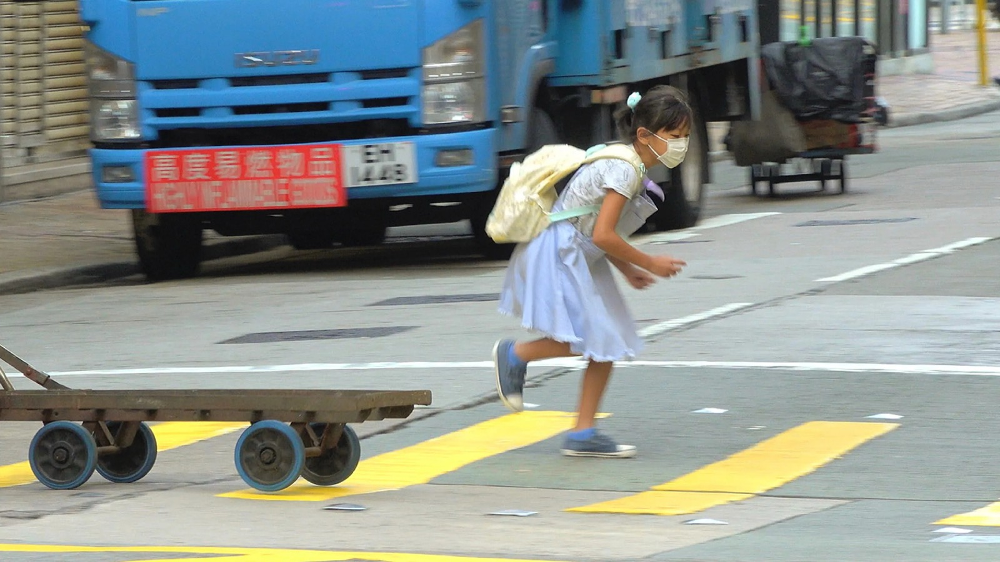

Francis Alÿs: spel zonder grenzen

De Belgisch-Mexicaanse kunstenaar Francis Alÿs verwierf internationale bekendheid met zijn poëtische en vaak absurdistische performances. Hij duwde een smeltend ijsblok door de straten van Mexico-Stad, verplaatste met honderden vrijwilligers een berg en rende recht op een wervelstorm af. Achter die ogenschijnlijk zinloze acties schuilen vragen over de wereld waarin we leven en de manier waarop onze samenleving functioneert.
De laatste jaren richt Alÿs zijn aandacht steeds meer op kinderspelen. Samen met zijn vaste cameramannen Rafael Ortega en Julien Devaux reist hij de wereld rond om spelende kinderen te filmen. Van het Pajottenland tot conflictgebieden in het Midden-Oosten: overal creëren kinderen hun eigen wereld, met zelfbedachte regels en een grenzeloze verbeelding. Hun spelen vertellen vaak meer over de samenleving waarin ze opgroeien dan op het eerste gezicht lijkt.
Francis Alÿs: spel zonder grenzen volgt de kunstenaar tijdens de voorbereiding van zijn tentoonstelling The Nature of the Game in het Belgische paviljoen op de Biënnale van Venetië in 2022. Via gesprekken met Alÿs, zijn medewerkers en curator Hilde Teerlinck verkent de documentaire de verbanden tussen zijn performances, schilderijen en films. Centraal staat de overtuiging dat spelen niet alleen een vorm van vrijheid is, maar ook een manier om de werkelijkheid te begrijpen.
- Regie
- Bertrand Lafontaine en Pieter Verbiest
- Eindredactie
- Bertrand Lafontaine
- Camera en montage
- Pieter Verbiest
- Canvas, première · 20.09.2022
- WIELS Brussel
- Copenhagen Contemporary